Unless otherwise specified, these GSM cellular phones are for countries that use the GSM digital mobile transmission system and not for use in the USA.
This is just a small sample of the GSMs that we have. There are many
other types available - Please Ask!
 i888 for GSM 900 baud and GSM
1900 baud
i888 for GSM 900 baud and GSM
1900 baud
One phone, five continents
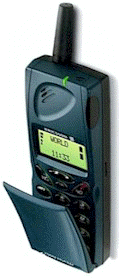
Ericsson i888 $ 424.95
The Ericsson I 888 World is a dual band mobile phone that lets you avail of the
complete range of GSM services in Europe, Asia/Pacific, Africa and the Americas. Finally
you can utilize one cellular phone for virtually around the world communication. It
affords intelligent network search between the bands and incorporates state-of-the-art
technology with a cutting-edge design. Finished in an elegant blue colour it comes with a
Global Travel Charger that powers your phone anywhere in the world. It also comes
with 5 different plug adapters for easy recharging. You can also send or receive e-mail and faxes or
download information from the Internet with the built-in wireless infrared modem and a
compatible computer, palmtop or PDA device.
With Ultra Slim Battery NM 6080
( GSM 900 / GSM 1900)
Talk-time: 4hrs 25mins / 3hrs 30mins
Standby time: 80hrs / 80hrs
Weight: 201g, 7.03oz
Size: 130x49x22mm, 5.1x1.9x0.8in
T18s Dual band with speech recognition!
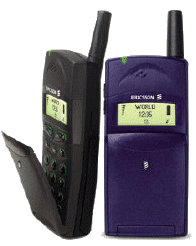
Ericsson T18s $ 449.95
Ericsson T18s is the first in a coming series of T-class mobile phones. It is designed to be compact and slender, easy to use and practically weightless. Its streamlined, beautifully finished exterior balances perfectly in your hand and comes in three distinctive colours: Granite grey, Juniper blue and Maple red. The Ericsson T18s supports the complete range of GSM phase 2 and has a logical menu system that is easily navigated.
Talk-time: 4hrs / 4hrs
Standby time: 100hrs / 100hrs
Weight: 146g, 5.2oz
Size: 105x49x24mm, 4.1x1.9x0.95in
T28 The Smallest Ericsson ever!
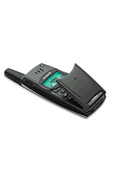
Ericsson T28 $849.95
Ericsson T28s is the smallest and most innovative mobile phone produced by Ericsson to date. Based on new technology and a unique design platform the phone’s exterior features a new, arched design, which creates a series of finely balanced contours lending it all the clarity and sophistication traditionally associated with Scandinavian design.Talk-time: 4.5 hours
Standby time: 200 hours
Weight 90 grams
Size 97x 50x 15 mm / 3.82x 1.97x 0.59 Ins
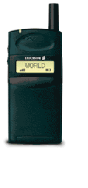
Ericsson GF 788 $ 349.95
Ericsson's smallest, most sophisticated
looking mobile phone delivers an outstanding 3 hours talktime and 60 hours standby time.
The GF 788 offers three menu types, creating for each user a totally personalized mobile
communications product. This is ideal for those who don't want to be weighed down by
an bulky cellular phone yet need a powerful full with a hearty battery life.
Talk-time: 3hrs
Standby time: 60hrs
Weight: 135g, 5oz
Size: 105x49x24mm, 4.1x1.9x0.9in
|
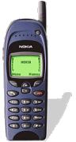 |
$ 409.95
6150 Dual Band
900 and 1800 baud
This is not for use in the US. For a dual band cell phone for use in the US please
see the Ericsson i888.
Click here for more information on the 6150.
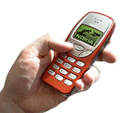
3210 - $ 379.95
This is the newest GSM from Nokia. It features a slim design,
light weight, and dual 900/1800 band.
Please click here for more information on the 3210.
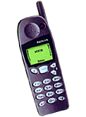5110
5110 - $329.95
Please click here for more information on the Nokia 5110.
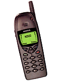6110
6110 - $ 389.95
Please click here for more information on the 6110.
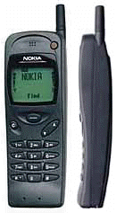
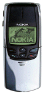
8810 - $ 699.95
To learn more about any Nokia cellular phone, please click on the Nokia logo below and do a search for the model you are interested in.
The first tri-band cell phone in the world!
GSM 900, GSM 1800, GSM 1900 for worldwide use!
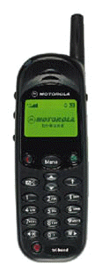
Motorola L7089 $449.95
This is the cell phone that many of us have been waiting for. Not only can it be used worldwide but it is compact, light and Motorola has packed it with many of the latest features including VoiceNotes feature (for recording and playing back up to 3 minutes of speech), VibraCall TM (so you know when you're receiving a call without your phone even ringing), a large, clear display conference calling and laser link data transmission. Please click here for more features.
The lightest and smallest GSM phone available!
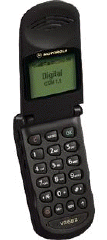
Motorola V3688 $749.95
The world's smallest and lightest GSM phone - only 2.7 ounces! Stylish, small and discreet with the features you need to take your world with you. This powerful little phone offers a large graphic display with 4 full lines of text, graphics, a real-time clock, plus 2 rows of dedicated service icons. Up to 180 hours of stand by time with optional battery.
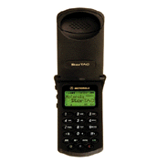
Startac 130 $429.95
Smaller and lighter than the previous Startacs, the 130 also has a longer battery life - up to 280 minutes with an optional battery. If you want to go far and light and can't afford the newer V3688, the 130 is the right choice.
Motorola 8900 dual band - $379.95
Motorola 8700 - $ 389.95
Motorola Slimlite - $ 449.95
D-160 - $ 249.95
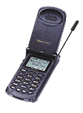
Startac 85 (black w/ vibrator) $349.95
For useful information about wireless travel please go to Hyde Flippo's online supplement to his book, The German Way.
NOTE: GSM PHONES can be used in any country where 900 baud GSM service exists. Manuals may be in various languages not necessarily your own but manuals in English are usually available via manufacturer's WEB PAGES. We are NOT responsible if your manual isn't in your language. We have no way of determing the language(s) of the manuals inside each unit.
Back to main menu

Call or e-mail for information or to order!
To Order Call 1-800-733-2209
or
Call (925)686-9945 for all other inquiries
Fax (925)686-9968
e-mail